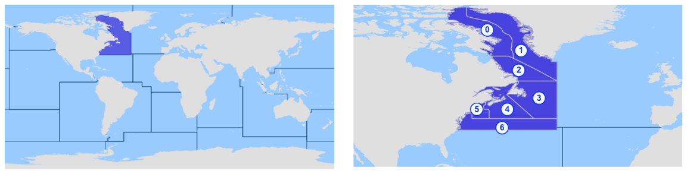

Addon fcd
Model fcd.fao.subzone area 21
FCD Lot
FCD FAO Zone
FCD FAO Subzone
Área 21: sector noroccidental del océano Atlántico

Subzona 21.0
Subzona 21.1
Subzona 21.2
Subzona 21.3
Subzona 21.4
Subzona 21.5
Subzona 21.6